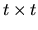
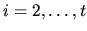

The Burrows Wheeler transform is used in one of the most effective text compression methods. We explain the transform below by using, as an example, the input text BANANA.
- Step 1.
- Let t be the size of the input text (in our example t = 6). We obtain a matrix M with dimensions
.
The first line of M corresponds to the input text. The i-th line, for
,
corresponds to a circular left shift of i - 1 positions with respect to the
input text. For BANANA, we obtain the following matrix M:
1 2 3 4 5 6
1 B A N A N A
2 A N A N A B
3 N A N A B A
4 A N A B A N
5 N A B A N A
6 A B A N A N
- Step 2.
- We sort the lines of matrix M lexicographically to obtain a new matrix P. In our example, we get the following matrix P:
1 2 3 4 5 6
1 A B A N A N
2 A N A B A N
3 A N A N A B
4 B A N A N A
5 N A B A N A
6 N A N A B A
- Step 3.
- The Burrows Wheeler transform for BANANA is then given by the last column (i.e. column t) of matrix P and by the number of the row of P that corresponds to the input text. In our example, the last column of P is NNBAAA and the row of P which contains BANANA is the fourth one. Therefore, the Burrows Wheeler transform for BANANA is the
pair (NNBAAA, 4).
The goal of this problem is to implement the Inverse Burrows Wheeler transform. Given the last column of a matrix P and the number of the row of P which contains the input text, your program should obtain the input text.
The input file may contain several instances of the problem, occurring consecutively in the input file, without any blank lines separating them. Each instance has two lines:
- 1.
- The first line contains the entries in the last column of matrix P, starting from the first row. Each entry is an uppercase letter, NOT separated by any blank spaces from its neighbour entries.
- 2.
- The second line contains the integer number corresponding to the row of P which contains the input text.
The last instance of the input file consists of the two lines
END
0
You may assume that the input text of each instance contains at most 300
letters.
For each instance of the problem, your program should print the input text as consecutive letters in a single line. The output of each instance is separated from the next by a blank line.
NNBAAA
4
OMOEULCG
1
END
0
BANANA
COGUMELO
Miguel A. Revilla
2000-02-09